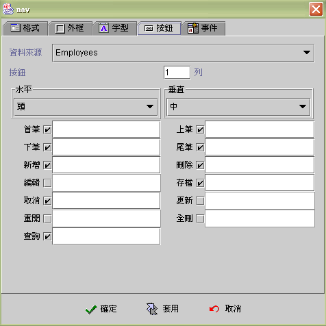
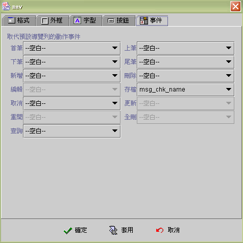
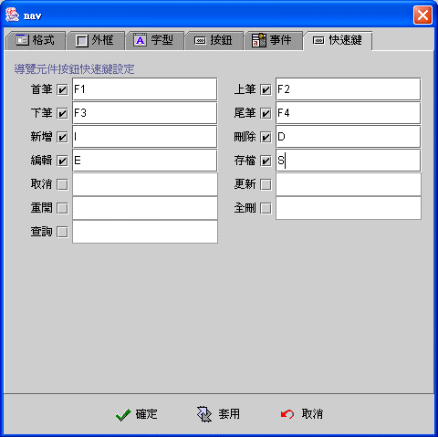

|

導覽元件
(Navigator component)

共同屬性 (common properties)
按鈕屬性 (button properties)
取代事件
(event)
快速鍵
(hot key)
導覽元件 (Navigator component)
提供使用者操作資料來源 (data source)
的介面，設計師根據使用流程，核選允許使用者操作資料來源的按鈕，導覽按鈕會隨時以致能
(enabled) 或失效 (disabled)反應資料來源的狀態，例如：資料來源資料記錄在第一筆時，首筆按鈕
(first) 及上筆 (previous)
按鈕會呈現失效 (disabled) 的狀態。如果採用 jLIVE™
授權機制，則相關未授權項目 (IUDQP) 的按鈕會完全失效
(disabled)，使用者將無法執行未授權的資料來源操作。導覽元件的預設功能可以用
取代事件
加入設計師在使用者操作過程的應用系統流程，例如：在刪除前加入確認訊息、存檔前加入資料檢查事件、新增前先行填入預設值、以自定的查詢視窗取代預設查詢等等。取代事件
(replaced event) 是取代 (replace)
原預設功能，所以設計師除了加入一系列的事件串流 (event
flow)
外，如果還須執行原預設功能，則必須在事件串流中，加入資料來源導覽事件相關的導覽功能。
按鈕屬性
(button properties)
-
資料來源 (data source)：選取資料來源。
-
按鈕 (rows)：按鈕列數。
-
水平 (text horizontal position)：文字與圖示
(icon) 的水平相對位置。
-
垂直 (text vertical position)：文字與圖示
(icon) 的水平相對位置為中 (center) 時， 文字與圖示 (icon)
的垂直相對位置。
-
首筆 (first)
 ：
移到首筆。當資料在第首筆時，按鍵會顯示成失效狀態
(disabled)。 ：
移到首筆。當資料在第首筆時，按鍵會顯示成失效狀態
(disabled)。
-
下筆 (next)
 ：下一筆。當資料在第尾筆時，按鍵會顯示成失效狀態
(disabled)。
：下一筆。當資料在第尾筆時，按鍵會顯示成失效狀態
(disabled)。
-
新增 (insert)
 ：
新增一筆資料。在新增狀態 (insert mode) 或編輯狀態 (edit
mode)時，按鍵會顯示成失效狀態 (Disabled)。 ：
新增一筆資料。在新增狀態 (insert mode) 或編輯狀態 (edit
mode)時，按鍵會顯示成失效狀態 (Disabled)。
-
編輯 (edit)
 ：將資料來源設成編輯資料
(edit mode)。 ：將資料來源設成編輯資料
(edit mode)。
-
取消 (cancel)
 ：取消新增狀態
(insert mode) 或編輯狀態 (edit mode)。 ：取消新增狀態
(insert mode) 或編輯狀態 (edit mode)。
-
重開 (reopen)
 ：重新執行資料來源開啟的
SQL 命令。 ：重新執行資料來源開啟的
SQL 命令。
-
查詢 (query)
 ：開啟預設的查詢視窗。 ：開啟預設的查詢視窗。
-
上筆 (previous)
 ：當資料在首筆時，按鍵會顯示成失效狀態
(disabled)。 ：當資料在首筆時，按鍵會顯示成失效狀態
(disabled)。
-
尾筆 (last)
 ：當資料在尾筆時，按鍵會顯示成失效狀態
(disabled)。 ：當資料在尾筆時，按鍵會顯示成失效狀態
(disabled)。
-
刪除 (delete)
 ：刪除資料記錄，按刪除鍵時，並不會出現訊息，設計師須以取代事件的方式，自行提供使用者確認的訊息視窗。 ：刪除資料記錄，按刪除鍵時，並不會出現訊息，設計師須以取代事件的方式，自行提供使用者確認的訊息視窗。
-
存檔 (post)
 ：在新增狀態
(insert mode) 或編輯狀態 (edit mode) 時，按鍵會顯示成致態狀態
(enabled)。 ：在新增狀態
(insert mode) 或編輯狀態 (edit mode) 時，按鍵會顯示成致態狀態
(enabled)。
-
更新 (refresh)
 ：重新由緩衝區
(buffer) 的檔案記錄 (record)讀取，並將連結至此資料來源的相關元件內含值更新。 ：重新由緩衝區
(buffer) 的檔案記錄 (record)讀取，並將連結至此資料來源的相關元件內含值更新。
-
全刪 (delete all)
 ：刪除資料來源的所有資料紀錄，只有在資料來源型態為
Buffered資料來源時才有作用。 ：刪除資料來源的所有資料紀錄，只有在資料來源型態為
Buffered資料來源時才有作用。

導覽元件中的按鈕 (button) ，是按列數 (row)
與按鈕個數，平均分配區域 (grid layout) 的方式排列。
▲Top
取代事件 (event)

▲Top
快速鍵 (hot key)
設定導覽元件快速鍵，核取 (check) 按鍵，再按下快速鍵；刪除時取消核取 (check) 即可。

▲Top
Copyright © 2001~
2004 Probe Technology . All Rights Reserved.
Questions, comments,
and suggestions to Service@probe.com.tw
|